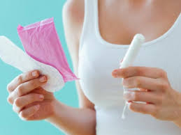

DO'S AND DONT'S

Landscaping: DON’T
On all the other days of the month, what you’ve got going on down there is totally up to you. Also, it’s totally a myth that staying bare is “cleaner.”
However, you should consider waiting until after crimson wave rolls through to pick-up your razor or get waxed. Thing is you’re waaay more sensitive (yup, physically and emotionally – lucky us!) while you’re on your period, so even waxing pros will experience more pain, and newly-shaved skin will be more prone to irritation.
Douching: DON’T
Seriously. Don’t. Guess what? Vaginas clean-up all by themselves! Isn’t that neat? But basically, anything else you’re putting up there is messing with its natural ~flow~.
This isn’t to say you shouldn’t be cleaning around it thoroughly, including your pubic hair. Washing a couple times a day while you’re on your period is ideal, and while I love flowery-ass soap more than anyone, it’s a good idea to opt for unscented soaps to keep things au naturale.
Period Sex: DO ;)
Of aaaalll the annoying myths about what having your period prevents you from doing – exercising, taking baths, making sushi, etc. – telling people they can’t get it on while they’re riding the cotton pony (I tried it, I won’t do it again) is just rude. Orgasms in general are actually pretty great for boosting your mood and alleviating your cramps – and obviously, having a partner is so not necessary.
One thing to note: if you engage in period sex, make sure you take an extra sec to stay safe and healthy. There’s a chance you’ll be more susceptible to infections, but it’s nothing proper protection and clean-up can’t prevent. So as an addendum to this DO, DON’T skip condoms & DON’T skip peeing or washing up afterwards.
Tracking Your Cycle: DO
Whether you use a manual method, an app, or an aggressively detailed Google Sheet that people keep asking you to stop talking about on the subway (not that I do this, but I totes recommend it), tracking your cycle is seriously useful. One of the easiest ways to keep on top of your menstrual health is by keeping an eye on what’s going on!
First of all, knowing when your period is coming will help you avoid surprise leaks, which are the enemy of good menstrual hygiene. Making a note of any irregularities in symptoms, consistency, or color will also help inform you if something’s off down there, and if you need to hit up your gyno.
Ignoring Your Symptoms: DON’T
On that note, women have been historically overlooked when it comes to their pain, whether that’s emotional or physical. Unfortunately, feeling crampy and bleh tend to come with the package of being a menstruating person, but you know your own body – if you feel like your discomfort is irregular, don’t just chalk it up to PMS.
Call your doctor
(Don’t just Google it; Google will just tell you you’re dying, I promise)! And if your blood is a weird color you’ve never seen before? Call your doctor! Smell something funny when you pull down your pants? Call your damn doctor! And definitely call in reinforcements if your cramps are unbearable, because that shouldn’t be normal. No one gets a prize for powering through excruciating pain, seriously.
Talking about yo’ flow: DO
A huge part of why everything I was just talking about isn’t already common knowledge is that there’s still plenty of stigma around discussing menstruation. It’s not hard to understand why everyone’s so afraid to be #PeriodProud – nearly half of women have experienced some sort of period shaming.
Pressuring people to hide their periods not only contributes to a lack of education, but a lack of access to necessary products, and in turn, improper menstrual hygiene. The best thing you can do to help break the taboo is to start thinking and talking about your period like a normal, natural bodily function… you know, since it is.